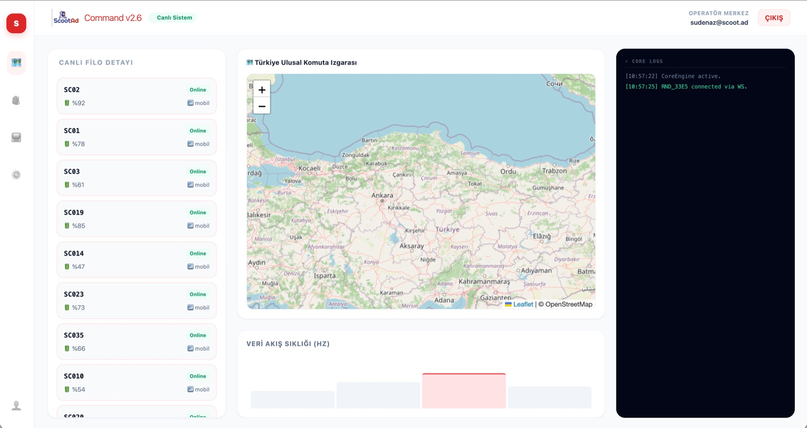

Staj Projesi · ScootAd
ScootAd Command Suite
Elektrikli scooter filosundaki cihazların tek bir panelden izlenmesi için geliştirilen yönetim sistemi. Cihaz verileri Headwind MDM üzerinden aktarılıyor, veri tarafında Supabase kullanılıyor; konum takibi Leaflet haritası üzerinde yapılıyor. Panel; giriş ekranı, canlı filo listesi, harita, log terminali ve filo yönetim merkezi olmak üzere dört görünümden oluşuyor — cihazların durumu, pil seviyesi ve bağlantı bilgisi listeye canlı olarak düşüyor.